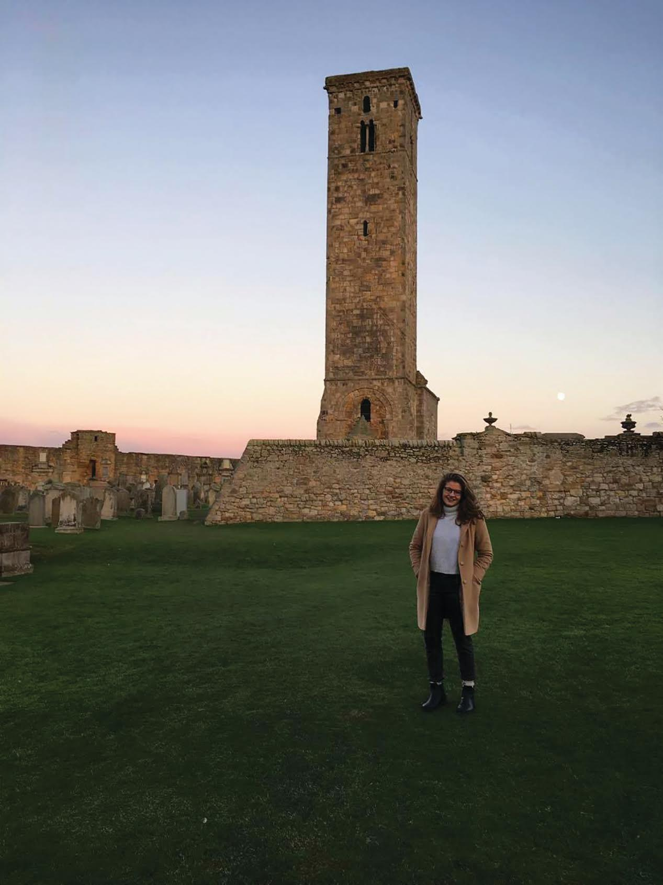
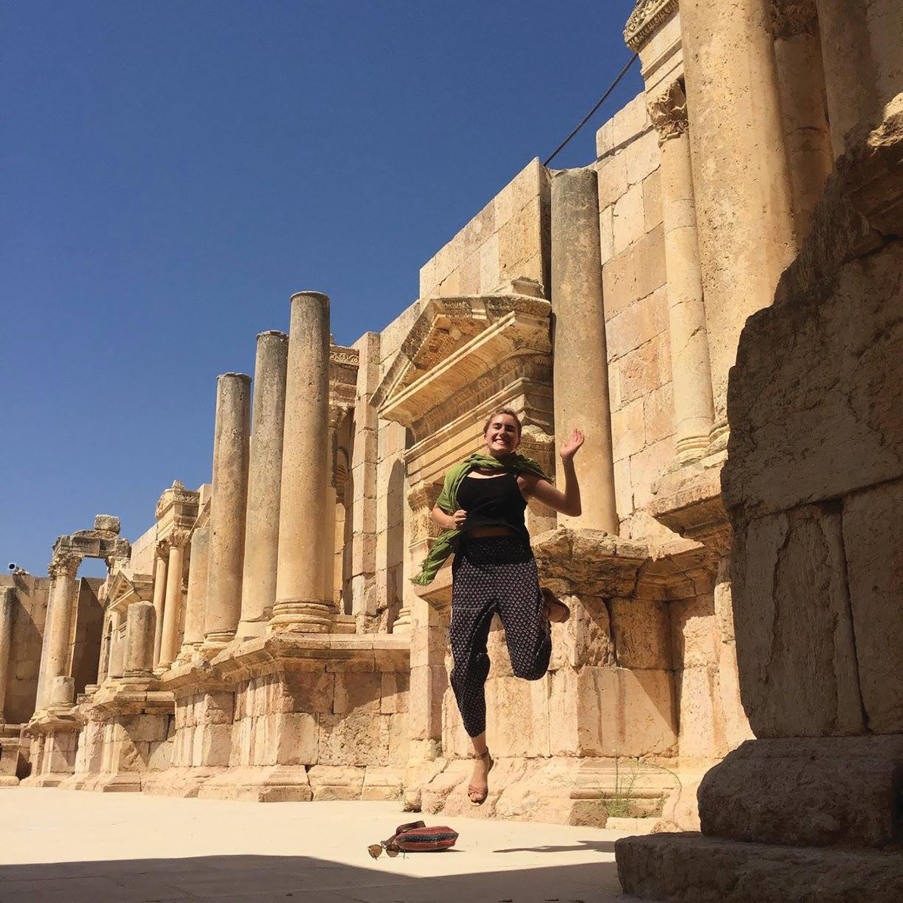
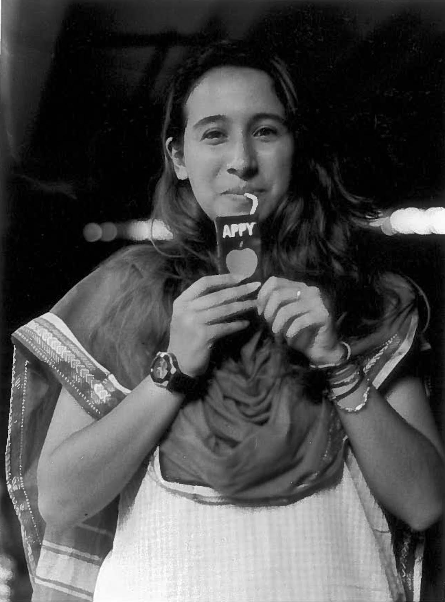
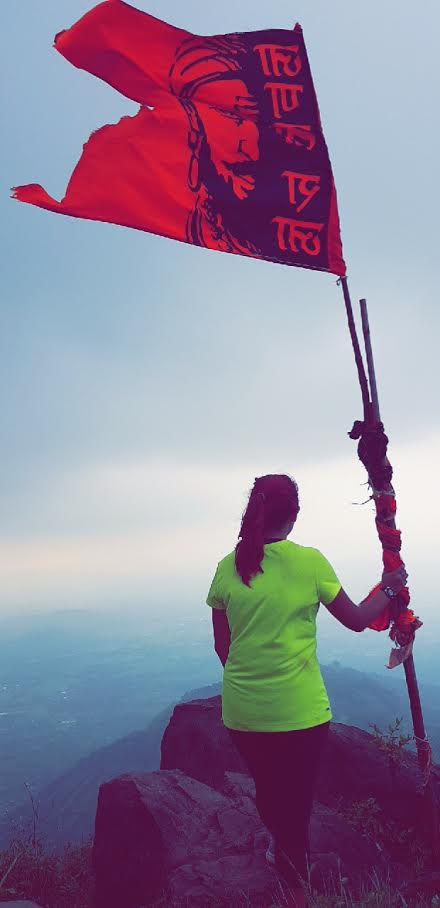
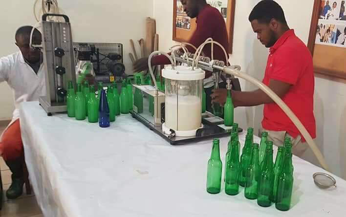

<html>
<head>
<link rel="stylesheet" href="https://unpkg.com/leaflet@1.2.0/dist/leaflet.css"
  integrity="sha512-M2wvCLH6DSRazYeZRIm1JnYyh22purTM+FDB5CsyxtQJYeKq83arPe5wgbNmcFXGqiSH2XR8dT/fJISVA1r/zQ=="
  crossorigin=""/>
<script src="https://unpkg.com/leaflet@1.2.0/dist/leaflet.js"
  integrity="sha512-lInM/apFSqyy1o6s89K4iQUKg6ppXEgsVxT35HbzUupEVRh2Eu9Wdl4tHj7dZO0s1uvplcYGmt3498TtHq+log=="
  crossorigin=""></script>
</head>
<body>
<div id='map' style='width: 700px; height: 500px;'></div>
<script>
var myMap = L.map('map').setView([35, 30], 3);
var osmUrl='http://{s}.tile.openstreetmap.org/{z}/{x}/{y}.png';
var osmAttrib='Map data © <a href="http://openstreetmap.org">OpenStreetMap</a> contributors';
var osm = new L.TileLayer(osmUrl, {minZoom: 1, maxZoom: 300, attribution: osmAttrib});

myMap.addLayer(osm);
L.marker([56.341533, -2.792688]).bindPopup("<b>Libby Croce</b><br/> St. Andrews, Scotland<br/>").addTo(myMap);
L.marker([52.360248, 4.885848]).bindPopup("<b>Libby Croce</b><br/> Amsterdam, Netherlands").addTo(myMap);
L.marker([52.191859, -1.707547]).bindPopup("<b>Jacob Elliot</b><br/> Stratford-upon-Avon, England<br/>").addTo(myMap);
L.marker([51.523182, -0.105744]).bindPopup("<b>Sachika Goel & Jacob Elliot</b><br/> London, England<br/>").addTo(myMap);
L.marker([31.922913, 35.931115]).bindPopup("<b>Emma Newman</b><br/> Amman, Jordan").addTo(myMap);
L.marker([29.568248, 35.413067]).bindPopup("<b>Emma Newman</b><br/> Wadi Rum, Jordan<br/>").addTo(myMap);
L.marker([34.970281, 33.171957]).bindPopup("<b>Emma Newman</b><br/> Cyprus").addTo(myMap);
L.marker([18.514798, 73.867764]).bindPopup("<b>Julia Volpe</b><br/> Pune, Maharashtra, India").addTo(myMap);
L.marker([19.142536, 72.883923]).bindPopup("<b>Julia Volpe</b><br/> Mumbai, Maharashtra, India<br/>").addTo(myMap);
L.marker([30.074796, 78.263263]).bindPopup("<b>Julia Volpe</b><br/> Rishikesh, Uttarakhand, India<br/>").addTo(myMap);
L.marker([5.053615, 12.323161]).bindPopup("<b>Domanique Rahman</b><br/> Cameroon<br/>").addTo(myMap);


</script>
</body>
</html>
